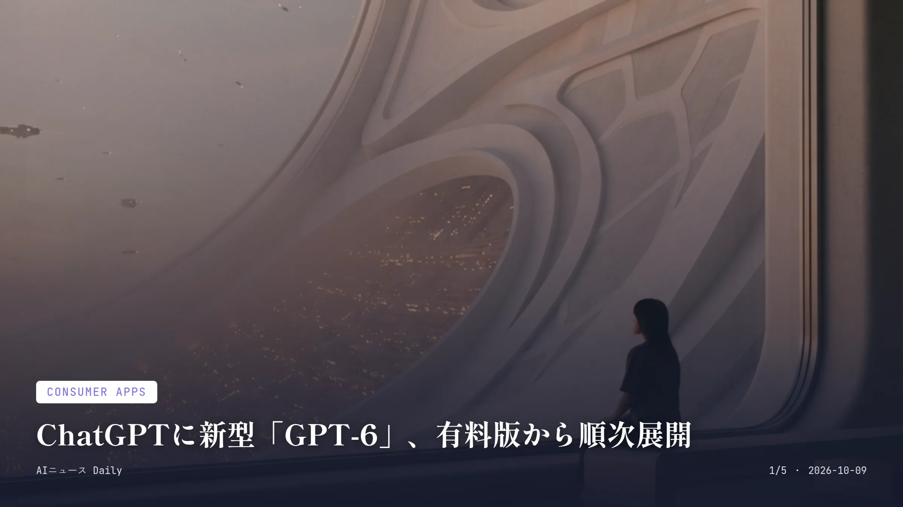
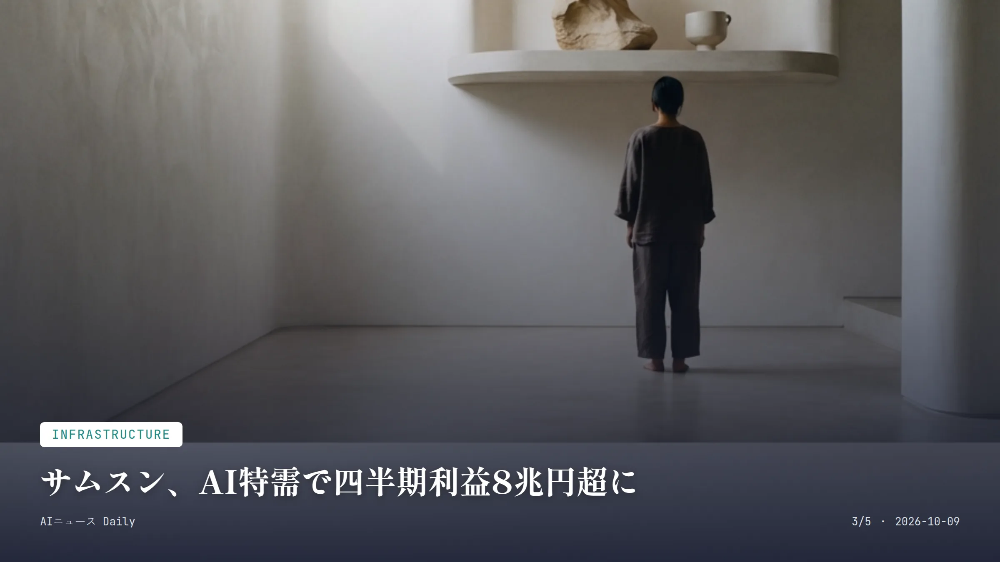
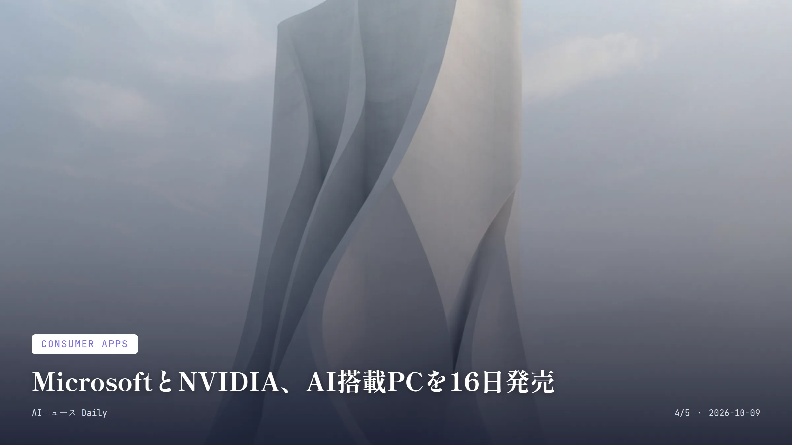

これは2026-10-09時点のアーカイブページです。最新のニュースはこちら
本サイトはアフィリエイトプログラムによる収益を得ている場合があります。
本サイトはGoogle AdSense等の広告配信サービスを利用しています。
目次

Consumer Apps
約1分で読める
ChatGPTに新型「GPT-6」、有料版から順次展開
無料版にも翌日から拡大、新UIも投入
2026年10月7日 GPT-6 Sol提供開始(有料プラン)
2026年10月8日 GPT-6 Luna提供開始(無料・Goプラン)
OpenAIが10月7日、ChatGPTの通常会話向けに新しいGPT-6モデル「GPT-6 Sol」を投入したと発表した。まずはPlus、Pro、Business、Enterprise契約者から使えるようになり、会話画面を自動で最適化してくれる新インターフェース「Intelligent UI」も一緒に入ってくる。
無料ユーザーとGoプラン利用者向けには、軽めの「GPT-6 Luna」が翌10月8日から順次広がっていく予定。課金していない人にも最新モデルの恩恵がちゃんと届く形だ。
なぜ重要か ChatGPTは世界で日常的に使われる生成AIの代表格で、新モデルへの切り替えは有料ユーザーだけでなく無料ユーザーの体験にも直結する。日本でも無料版を仕事や学習に使う人は多く、来週あたりから応答の質や画面表示の変化に気づく利用者が増えそうだ。
ChatGPT GPT-6 OpenAI Intelligent UI
Business
約1分で読める
Google、企業向け万能AIエージェント発表
「目的を伝えるだけ」で業務遂行、現在は非公開プレビュー
2026年10月8日 Gemini agent発表
非公開プレビュー 現在の提供段階
Google Cloudが10月8日、企業向けイベント「Gemini at Work 2026」で業務全般をこなす新AIエージェント「Gemini agent」を発表した。1つのプロンプト欄に入力するだけで、質問対応から資料作成、コーディングまで幅広くこなせる、いわば「万能エージェント」という位置づけだ。
Googleによれば、利用者が細かい手順を指示する必要はなく、達成したい目的さえ伝えればいい。あとはエージェントが自分で計画を立て、社内のツールやデータにつなぎにいき、文書やメール、開発環境に成果物を返してくれるという。
Gemini agentは現在非公開プレビュー段階で、GoogleはWorkspaceの一部ビジネス・エンタープライズプラン向けに今後公開していく構えだ。
なぜ重要か Googleが企業の日常業務を丸ごと任せられるエージェントを打ち出したことで、OpenAIやAnthropicとの「業務代行AI」競争はさらに熱を帯びそうだ。対象プランを契約する日本企業にも提供が広がれば、職場でAIに業務の一部を任せる働き方が、徐々に現実味を帯びてくるかもしれない。
Google Cloud Gemini agent Gemini at Work AIエージェント

Infrastructure
約1分で読める
サムスン、AI特需で四半期利益800億ドル超に
前年比782%増、半導体メモリが牽引
107.4兆ウォン(約800億ドル) 2026年第3四半期の営業利益見通し
782.5% 前年同期比の増加率
55% 過去最高の利益率
Samsung Electronicsが10月8日、2026年第3四半期の営業利益が107.4兆ウォン(約800億ドル)に達する見通しだと発表した。テック企業の四半期の営業利益として過去最高で、AIチップ向けメモリ需要の急増が業績を押し上げた格好だ。
前年同期の12.17兆ウォンから見ると約9倍、率にして782.5%の増加で、利益率は過去最高の55%に達した。売上高も195兆ウォン前後と、前年比127%近い伸びになる見込みだという。
SamsungとMicronはいずれも、AI向けメモリの需給逼迫が2028年まで続くとの見方を示しているという。
なぜ重要か メモリ半導体の品薄と値上がりは、スマホやパソコンなど日常的に買う電子機器の価格にも波及しうる。日本の家電量販店でもここ数カ月、メモリやストレージを積む製品の値上がりが話題になっており、この需給逼迫が長引けば私たちが買うPCやスマホの価格にも響いてくるかもしれない。
Samsung AI半導体 メモリ不足 決算

Consumer Apps
約1分で読める
MicrosoftとNVIDIA、AI搭載PCを16日発売
新型Surfaceは2599ドルから、クラウド不要でAI動作
$2,599 Surface Laptop Ultraの価格
10月16日 発売開始日
128GB 最大統合メモリ容量
Microsoftが10月7日、NVIDIAの新チップ「RTX Spark」を積んだ新型ノート「Surface Laptop Ultra」の価格と発売日を発表した。価格は2,599ドルから、予約受付はすでに始まっていて、発売は10月16日の予定だ。
最大の売りは、AIモデルを手元の端末だけで動かせること。クラウドの利用料金を気にせず大規模なAIモデルを試せるとしている。構成によっては最大128GBの統合メモリも選べる。
発表の場にはMicrosoftのサティア・ナデラCEOとNVIDIAのジェンスン・ファンCEOが登壇し、ファン氏は「私たちはコンピューターを再発明した」と語った。
なぜ重要か クラウド利用料を気にせず端末単体でAIを動かせるPCが主要メーカーから出そろってきたのは、AI利用コストの構造を変えうる動きだ。日本でもDellやHPなど同じNVIDIAチップを使う機種の発売が見込まれ、今後はAI機能を重視したパソコン選びが当たり前になっていきそうだ。
Microsoft NVIDIA Surface Laptop Ultra AI PC
Health Tech
約1分で読める
ユタ州、AIがにきび薬を処方する実証実験
医師の診察なしで初回処方、月5ドルから
$4.99/月 Nolla Derm利用料金
61日 皮膚科の予約までの最長待ち時間
米ユタ州で、ヘルステック企業Nolla Healthのアプリ「Nolla Derm」が、AIによる顔のスキャンだけでにきび治療薬の初回処方を出す実証プログラムを始めた。対象は軽度から中等度のにきびに限られ、重症や複雑なケースは人間の医師に回される。
利用者はアプリ上で本人確認と問診を済ませたあと、顔を5つの角度から撮影するだけ。10〜15分ほどで治療方針と処方が示されるという。料金は月額4.99ドルで、通院は不要とされている。
Nolla Healthによると、ユタ州だけでも10万人超がにきびに悩んでいるのに、皮膚科を受診するのは約1割にとどまり、受診できても予約まで最長61日待つ必要があるという。
なぜ重要か 医師の診察を経ずにAIが処方まで行う仕組みが米国の州レベルで認められたのは異例で、遠隔医療やAI診療の規制のあり方を占う試金石になりそうだ。日本では医師法により医師以外が処方を行うことは認められておらず、同様の仕組みがすぐに導入される可能性は低いものの、オンライン診療の規制緩和を巡る議論に何らかの影響を与えるかもしれない。
Nolla Health AI医療 ヘルステック ユタ州
Media & Culture
Media & Culture
約1分で読める
OpenAI、「College Planner」で大学出願を支援
10代向けChatGPTに出願管理ツール追加へ
2026年10月7日 College Planner発表
米国10〜12年生 当初の対象学年
OpenAIが10月7日、10代向けの「ChatGPT for Teens」に、大学出願の締め切りや必要書類、奨学金情報をまとめて管理できる新機能「College Planner」を導入すると発表した。
対象はまず米国の高校10〜12年生で、4年制大学への出願を想定した内容からスタート。将来的には2年制大学や職業訓練校、他国の学生向けにも広げていく方針だという。フラッシュカードやクイズ機能、10代向けのAI評議会も同時に用意される。
OpenAIによると、ChatGPT for Teens導入後、利用できる生徒は利用できない生徒に比べて学習関連のメッセージを平均で約270万件多く送っているという。
なぜ重要か 大学出願はスケジュール管理が煩雑で、保護者や生徒の負担が大きい作業の一つ。AIがその手続きを整理してくれるなら、来年度以降に受験シーズンを迎える家庭の負担も軽くなるかもしれない。日本では入試の仕組みが異なるため同様のツールがすぐに広がるとは限らないが、学習管理AIへの関心は国内でも高まっていきそうだ。
ChatGPT for Teens College Planner OpenAI 教育AI
先頭に戻る